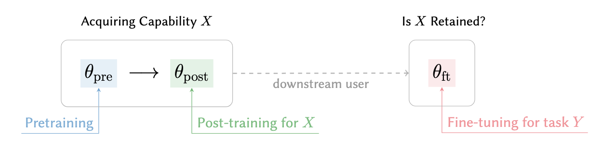
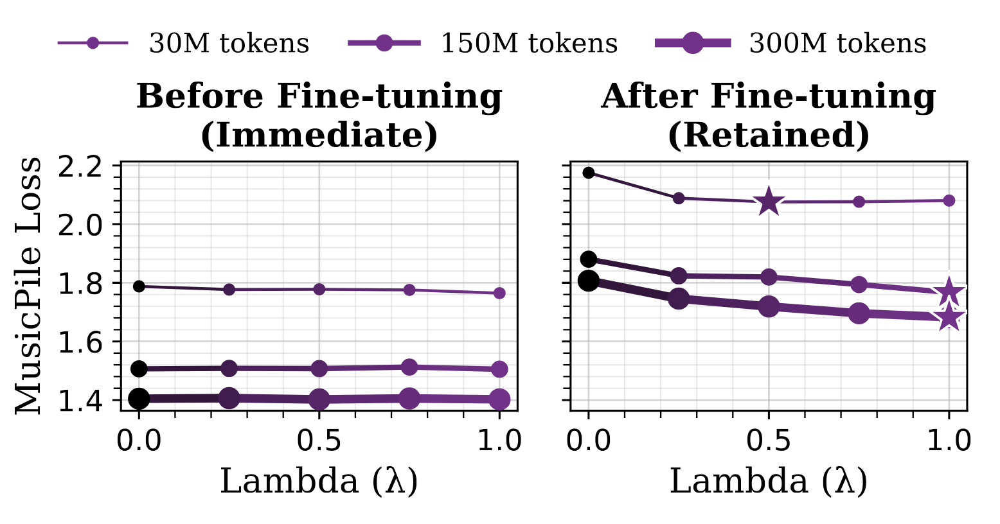
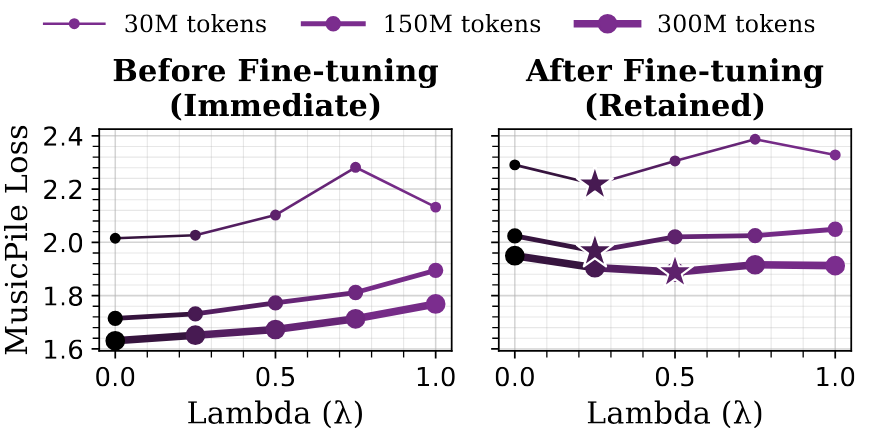
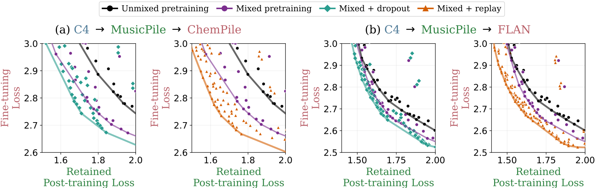

Figure 2: Sequential training pipeline in LLMs. A model is first pretrained (θpre) to learn general representations, then post-trained to acquire a specific capability X (θpost), and finally fine-tuned by a downstream user for a new task Y (θft). The key question is whether the capability learned during post-training is preserved after downstream fine-tuning, highlighting the potential for later updates to modify or overwrite earlier knowledge.
Modern training pipelines for large language models proceed through multiple sequential stages (e.g., pretraining → post-training → fine-tuning), each updating the same underlying parameters. This implicitly assumes that newly learned capabilities can be added without disrupting existing ones. We study this in two stages:
Key Challenge
Capabilities acquired earlier in the pipeline are not inherently preserved—subsequent training can overwrite or degrade them.

Figure 3: Same post-training performance, differing retention. Mixing doesn’t help immediately—but it matters later. As λ (fraction of data mixed during pre-training) increases, post-training loss stays flat, while retention after fine-tuning improves.
We study how early exposure to post-training data affects downstream retention. We vary how much of the target data is introduced during pretraining (λ), then train all models to convergence on the same post-training objective before fine-tuning on a new task.
We find that across λ (the ratio of post-training data mixed in during pre-training), models reach nearly the same MusicPile loss after post-training, demonstrating that early exposure has a negligible impact on immediate capability learning in our setting. After downstream fine-tuning, however, models with more early exposure forget less and retain substantially lower MusicPile loss. Our results illustrate that two models can look equally capable immediately after post-training, yet differ sharply in how much of that capability survives later updates.
Takeaway
Immediate performance is unchanged across λ, but retention improves with early exposure—models that see more data during pretraining consistently forget less after fine-tuning.

Figure 4: Under a fixed budget of steps on post-training data, increasing the fraction of data used during pretraining (λ) worsens immediate post-training loss but improves retained performance after fine-tuning. This highlights a tradeoff between short-term optimization and long-term retention.
Early exposure helps retention — but is that because the model sees the post-training data earlier, or simply because it sees more of it? To separate these effects, we fix the total amount of post-training data the model sees and vary only where that data is placed in the training pipeline.
We compare different allocations:
Our results reveal a clear tradeoff: reserving more data for post-training improves immediate target-domain performance, since Stage 2 directly optimizes for that capability. But after downstream fine-tuning, the pattern reverses: models exposed to some of the data earlier retain the capability better, despite receiving less dedicated post-training exposure. Ultimately, post-training helps acquire the capability quickly, while early exposure helps it survive later updates—so the best allocation lies between the extremes of relying on pre-training or post-training solely.
Data placement changes durability.
Even under a fixed data budget, allocating some target-domain data to pretraining improves retention after downstream fine-tuning, while reserving all of it for post-training gives the best immediate performance.

Figure 5: Placeholder caption — summarize what the panels show (e.g., intervention types, metrics, and retention relative to a baseline).
Early exposure is not the only way to make post-trained capabilities more durable. If when a model first sees the data matters, then a natural follow-up is whether we can also improve retention by changing how the model is post-trained.
We study two simple interventions during post-training:
Both methods are applied before the downstream fine-tuning stage. This lets us ask whether they merely improve the post-trained checkpoint immediately, or whether they actually help the capability survive later updates.
Across our experiments, replay and dropout improve the retention–adaptation frontier. Models trained with these interventions retain more of the post-trained capability after downstream fine-tuning, while still adapting well to the new task. However, these gains do not replace early exposure. The strongest frontiers come from combining pretraining-time mixing with post-training interventions, suggesting that they operate through complementary mechanisms.
Retention is shaped across the whole upstream pipeline.
Early exposure makes capabilities less brittle before post-training begins, while replay and dropout further improve durability during post-training itself.
@misc{feng2025early,
title={Early Data Exposure Improves Robustness to Subsequent Fine-Tuning},
author={Lawrence Feng and Gaurav R. Ghosal and Jacob Mitchell Springer and Ziqian Zhong and Aditi Raghunathan},
year={2025},
eprint={2507.09937},
archivePrefix={arXiv},
primaryClass={cs.LG},
url={https://arxiv.org/abs/2507.09937}
}